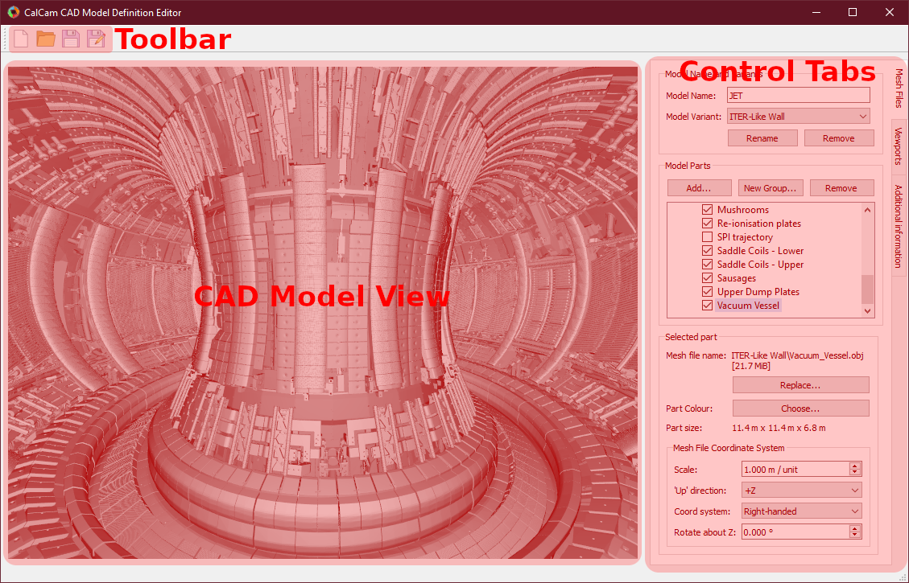

CAD Model Definition Editor
The CAD model definition editor, which can be accessed using the New… or Edit… CAD model buttons in the Calcam Settings window, is shown below:
Basic Model Properties
At the top of the Mesh Files control tab is a box to enter the name of the CAD model, which is displayed in the Calcam GUI or used when loading the model with the calcam.CADModel class. Below this is a dropdown box showing the different variants of the model, where new variants can be added or the current variant renamed or removed, using the buttons directly below the Model Variant dropdown box. The purpose of model variants is to provide a way of keeping variations on the same machine (e.g. versions corresponding to different points in time if some machine feature changed) together in one machine CAD definition.
Adding and organising model parts
In the centre of the Mesh Files tab is a tree view showing the parts of the model. Each part corresponds to a single 3D mesh file.
To add a new part, click the Add… button above the part tree to browse for one or more mesh file(s) to add. Currently Calcam supports .obj and .stl format 3D mesh files. The selected file(s) will be added to the 3D view and the part tree, with a part name corresponding to the mesh file name.
Note
When importing mesh files, pay attention that the mesh file scale is set correctly (see Coordinate system settings) - wrongly scaled models can “look” normal in the CAD mnodel editor but then cause wrong scale factors and unexpected GUI behaviour when performing calibrations. You should be able to tell by checking that the physical dimensions of the part, which are displayed under Selected Part on the Mesh Files tab, look correct.
To rename a part, double-click on its name and type the new name.
A part can be selected in the feature tree by clicking on its name. With the part selected, information and settings for that part are shown in the Selected Part box at the bottom of the Mesh Files tab. This includes the mesh file name and file size, the physical size of the part and the mesh file coordinate system conventions.
The mesh representing this part can be exchanged for a different file using the Replace… button under the mesh file details. The colour that the part should appear in can be changed using the Choose… button at the bottom of the tab.
To logically organise CAD model parts, they can be collected in to groups. To create a group, click the New Group… box above the model part tree and enter a name for the group. Parts can be moved in and out of groups by clikcing and dragging the parts as desired in the parts tree. Groups can be convenient because the user can quickly turn on or off all items in a group together, and if the model is split in to a large number of parts it can be helpful to logically organise them. An example feature tree with parts split in to groups is shown below:

To remove a part from the CAD model, select it from the feature tree and click the Remove button above the model tree.
Features can be turned on or off by ticking or un-ticking the checkbox next to the feature’s name. Features which are ticked when saving the model definition will load by default whenever the model is loaded, while any un-ticked features will not be loaded by default.
Coordinate system settings
For working with CAD data, Calcam uses a right-handed cartesian coordinate system with vertical ‘up’ along the +Z axis and units in metres. This may not be the same convention used in mesh files you wish to load, so settings are available under the Mesh File Coordinate System section to specify what conventions are used in the mesh file. These settings are:
Scale: the physical length represented by a length of 1 unit in the mesh file. For example if the mesh has been exported from CAD software in units of millimetres, this should be set to 0.001 m/unit to scale the model correctly.
Up direction: which direction in the mesh file corresponds to vertically upwards; this can be positive or negative in any of X, Y or Z. Use this if imported meshes appear rotated when loaded in to Calcam.
Coord system: whether the data in the mesh file uses a right- or left- handed cartesian coordinate system. Default is right-handed; change this if you know the mesh file is left-handed, or if the imported mesh data appears mirrored.
Rotate about Z:use this to rotate the imported mesh about the vertical axis (i.e. toroidally) if required; can be set to values between -180 to +180 degrees.
Viewport Setup
It is usually convenient to define some preset views of the model (i.e. camera positions and orientations) which can be quickly switched to e.g. as starting points for calibrations. For example, it is usually convenient to make preset views through ports which are usually used for cameras. Viewport setup is performed on the Viewports tab. At the top of this tab is a list of the viewports defined in the CAD model definition. At least one view must be defined before saving the CAD model definition, to be set automatically when the CAD model is loaded.
To add the current 3D view shown in the window as a preset view, enter a name for the view in the box half way down the Viewport tab and click Add. The current viewport can be adjusted either with mouse controls or by manually entering the 3D position and viewing target of the camera in the boxes near the bottom of the tab. To control the viewport with the mouse, the following mouse controls can be used on the 3D view:
Left Click - Place a cursor on the 3D model, or move the cursor if one already exists. This will display information about the cursor position in the window status bar and can be used by cross-sectioning / wall contour display features.
Right Click + Drag - Look around (first-person shooter style control; default) or rotate CAD model depending on settings
Middle Click + Drag - Pan (translate) sideways i.e. in the plane of the monitor.
Scroll Wheel - Move forwards or backwards.
Ctrl + Scroll Wheel Reduce or increase the CAD field-of-view angle (i.e. Zoom)
Ctrl + Right Click + Drag - Roll the camera (rotate about the direction of view)
When multiple views are defined in a CAD model, the default view, i.e. the view set automatically when the model is loaded, can be set by selecting the view in the view list and clicking Set As Default (*) under the view list. The current default view is marked with an asterisk *. To remove an existing view, select it and click the Remove button.
Adding Additional Information
Additional information can be added to the CAD model definition using the Additional information tab:
R,Z Wall Contour
An R,Z wall contour can optionally be saved as part of the model definition. This can be viewed in the 3D viewer, and is required if you want to render an un-folded wall view using the 3D viewer or programatically Rendering Images. It is also convenient to have this information attached to the CAD model if you want to generate Tomography Geometry Matrices. To add an R,Z wall contour to the CAD model, prepare the contour in a two-column ASCII file containing R,Z coordinates of the wall (in metres) around the poloidal cross-section, with one coordinate per line in the file. Then click Load from file… in the R, Z Wall Contour box to load the file. If a wall contour already exists in the model, its details will also be displayed in this box. If a cursor is placed on the 3D model, the current wall contour can be displayed, at the cursor position, using the Show contour at cursor position checkbox.
3D Coordinate Information
In various places in Calcam, the 3D position of a point on the CAD model is displayed. By default, the \(X,Y,Z\) coordinates in metres and \(R,Z,\phi\) coordinates are displayed. However, it is often helpful to have more machine-specific information added to this. For example, on a tokamak usually divided in to toroidal segments, it can be helpful to display which segment something is in, or you may want to display coordinates in different units. This can be achieved by writing a custom coordinate formatting function in Python, which can be saved as part of the model definition and is used to generate the 3D coordinate information to be displayed. This takes the form of a user-written python module or package, and details of how to write such a formatter are given here. Once created, you can use the Load custom… button in the 3D coordinate information box to browse for the python code (Note: if your coordinate formatter code is a Python package rather than a single module, in the file selection dialog, select the __init__.py file of the package). At the top of the 3D coordinate information box is information about the current coordinate formatter. If a cursor is currently placed on the model, the output of the coordinate formatter for its current location is shown. If you have loaded a custom coordinate formatter and want to make changes to its code “live”, you can use the Refresh button to re-load the currently loaded python file. If a custom coordinate formatter is already loaded or already exists in the model, an Edit… button is displayed which will open the python file or folder for editing. To remove the custom formatting code from the model and revert to the default built-in coordinate display, use the Remove button.
Loading & Saving Models
Changes to the currently loaded model can be saved using the Save or Save As buttons on the toolbar. A different CAD model definition can be loaded with the Open button, or a new empty CAD model definition can be started with the New button. When saving a model definition, if the definition is saved to a directory not currently in Calcam’s CAD model search path, you will be prompted to add that location so that the saved CAD model will be visible in the other Calcam GUI tools.